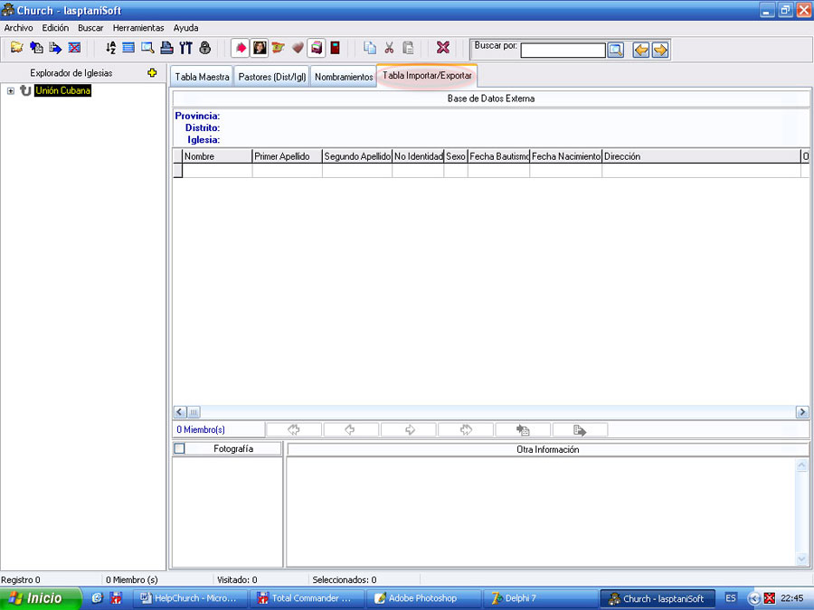

Importar/Exportar

Figura 12. La pestaña Tabla Importar/Exportar.
Se parece mucho a la pestaña Tabla Maestra, pero es independiente de ella, la única relación que guardan es a la hora de transferir los datos. Esta ventana contiene la base de datos externa, que puede ser la misma que tenga abierta en la Tabla Maestra, pero a la que hemos llamado externa porque es secundaria, no es la más importante.
Los datos aparecen como resultado de clicar el botón de Importar o Exportar, o de accionar la opción similar en el Menú Principal.
Al lado derecho del navegador de la rejilla de datos aparecen dos botones que se activan cuando hay datos o registros para procesar:
 Utilice este botón para copiar o añadir todos los registros mostrados para la Tabla Maestra, esto ocurrirá si la Tabla Maestra está con el Candado abierto y si existe alguna iglesia activa, de lo contrario no hay transportación de datos.
Utilice este botón para copiar o añadir todos los registros mostrados para la Tabla Maestra, esto ocurrirá si la Tabla Maestra está con el Candado abierto y si existe alguna iglesia activa, de lo contrario no hay transportación de datos.
Utilice este botón para copiar o añadir todos los registros desde la Tabla Maestra hacia la externa, esto ocurrirá, si la Tabla Maestra es una iglesia activa, de lo contrario no hay transportación de datos.
En ambos casos los datos a procesar (Importar/Exportar) pueden ser el resultado de una consulta o búsqueda.
En ambos casos también se mostrará una ventana para informarle cuando los datos han sido transferidos, momento en el cual los datos de la tabla afectada se actualizarán.